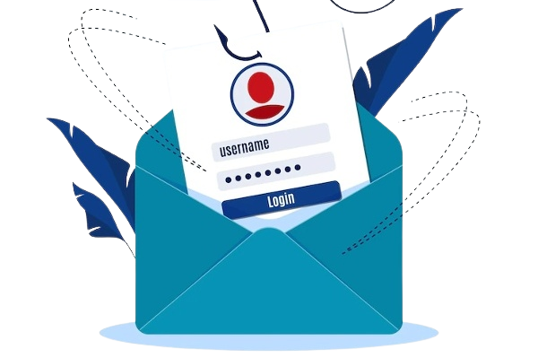
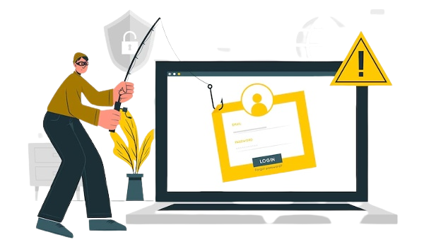

How Do Anti-Phishing Software Work And Why You Should Care
When it comes to online security, phishing is one of the biggest threats. Phishing scams are emails or websites that pose as legitimate businesses in order to trick people into giving away personal information. Anti-phishing software is designed to detect and block these scams.
There are a few different ways that anti-phishing software works. One way is by looking for suspicious email headers. These headers can be spoofed, but there are usually tell-tale signs that something is off. Another way is by checking the URL of websites. If a website's URL doesn't match up with the legitimate site, it's likely a phishing scam.
Anti-phishing software is an important tool for keeping yourself safe online. If you're worried about being scammed, make sure to download an anti-phishing program and keep it up-to-date.
Based on research by international authorities, hundreds of thousands of individuals around the world were targeted by phishing scams in 2016, and the number is rising. There are various steps you can take to protect your computer, phone, etc. from becoming a victim.

To ensure your digital security, it's recommended to get specialized anti-phishing software. This involves employing multiple elements of anti-phishing defense that plug up security holes in your setup. Here are some of the features you can find in such software.
How does your email scanner work?
Cybercriminals can use malicious links and attachments to make their way into your network. Therefore, the most effective way to prevent this from happening is to limit delivery of suspicious messages in your inbox.
Actively prevents phishing attacks by sending letters in plain text that cannot be read by malicious software. Emails containing malicious software are automatically held and you will be notified about them.
How to find and use the right technology for your smart quarantine
It is possible that emails you count on might be falsely labeled or completely blocked, which may be especially tragic if you rely on important information in these messages. Nevertheless, with advanced machine learning, your email filtering solution won't mistakenly flag or block these vital messages.
How authentication helps protect your data.
Scammers may attempt to spoof your business' domain name, an effect that social media sites tend to amplify if your page is popular. Anti-phishing software may help deter cybercriminals' efforts to spoof your domain name by adding extra provisions to your domains' signatures.
This computer software can also detect incoming spoofed emails. Occasionally, all it takes for an email-header spoofing attempt is just a change in the name of the text or the email address. Anti-phishing software can take control of this procedure every few days and identify users automatically.
How does Webroot protect users from malicious URLs?
Whether you are completely new to the web or have many years of experience, there's no problem: one accidental click, and your system can spread malware to your visitors. Even if you are bound by your company to an office cubicle all day long, your coworkers may still intentionally or accidentally open the door to malware.F

Protect yourself and the only people who see the site by ensuring no managers click a malicious link. Anti-phishing software can identify suspicious links and prevent them from running. If you receive malicious code, anti-phishing tools will automatically block it from running. With the security instruments here, your visitors can connect to the website safely.
How to use It Works across any mail server including Exchange, Gmail, and Yahoo! Mail.
Anti-phishing apps administer a significant quantity of work, but this process isn't costly or overly confusing if you plug in and begin to play.
If you make the correct changes to your DNS records and properly install the program, you just need to update the mail server parameters in order to get complete protection. There is no need to switch any mail servers or operating systems.
How to make your blog work better on mobile devices
As mobile devices are getting more and more common as a vector of phishing attacks, it's essential to consider the ways in which they can improve anti-phishing tactics and protect your personal devices. By increasing security for each system you and your coworkers access, you decrease the vulnerabilities that hackers hunt for.
In the end, the goal of phishing is to get you to reveal personal information. Anti-phishing software checks that the URL you are visiting is legitimate. The URL is checked against a database of known phishing websites.